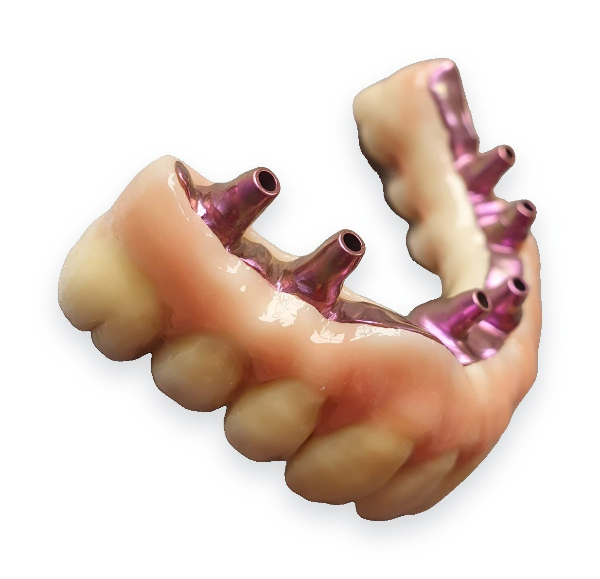
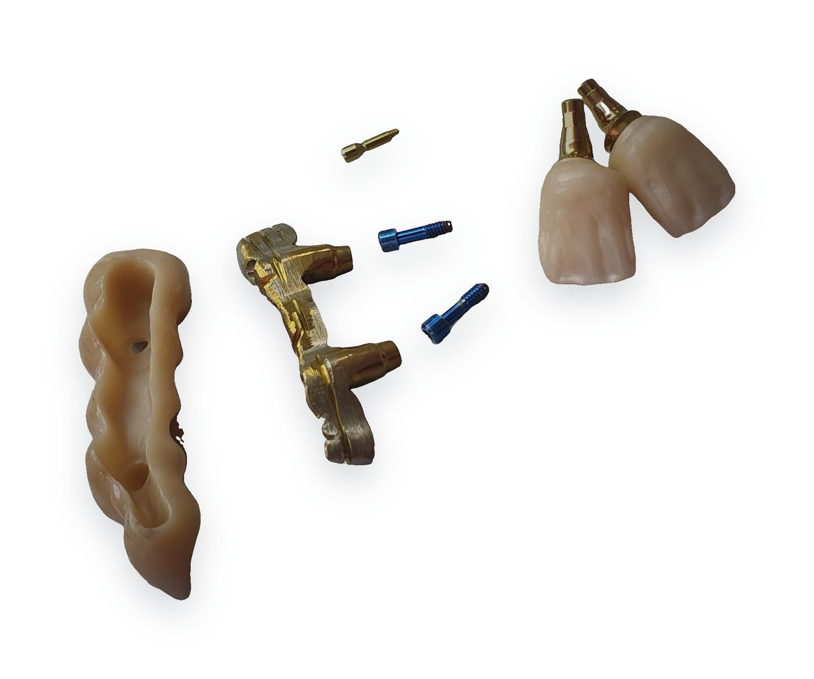
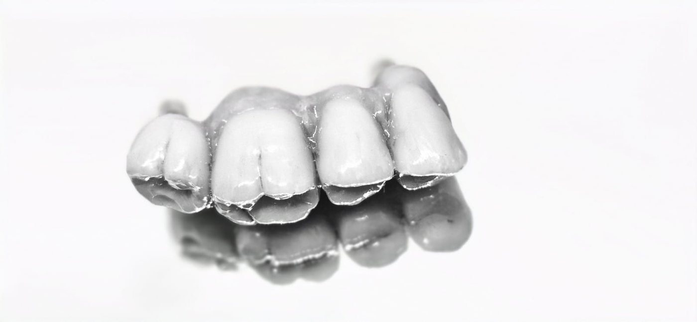
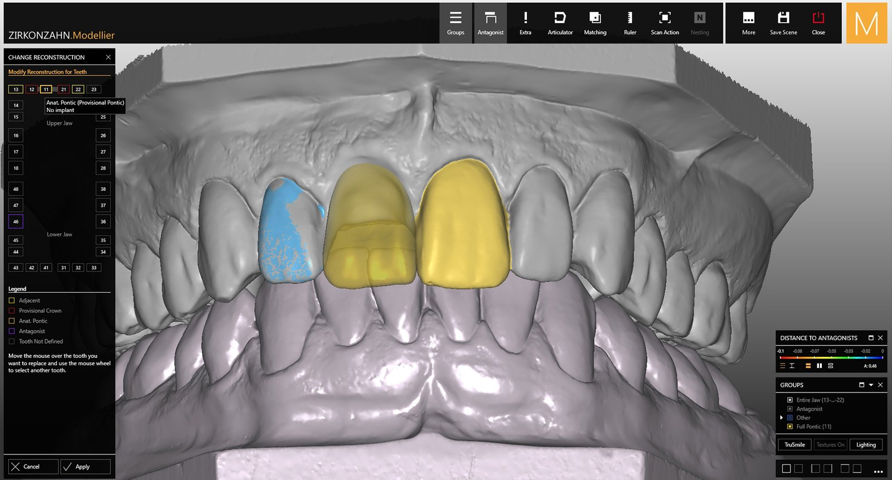
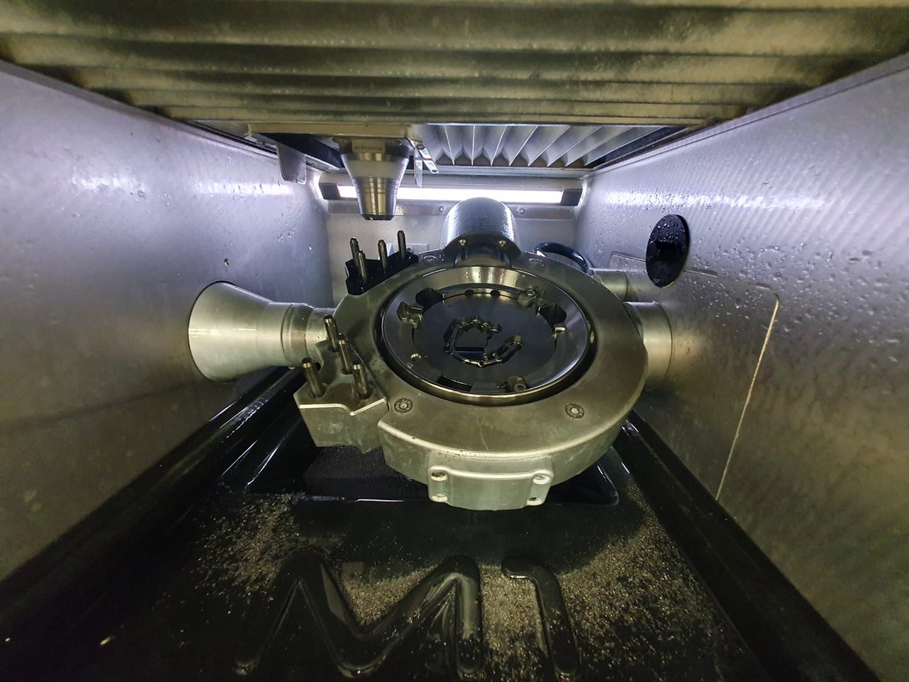
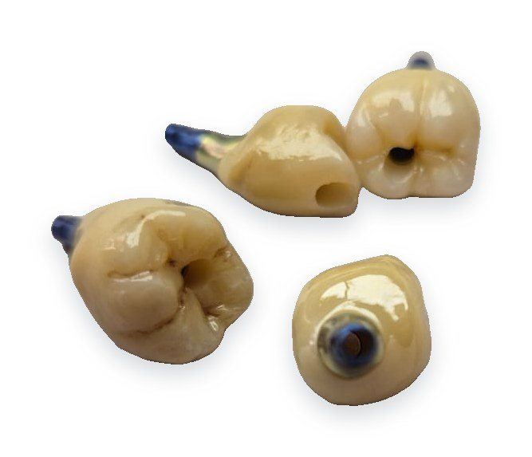
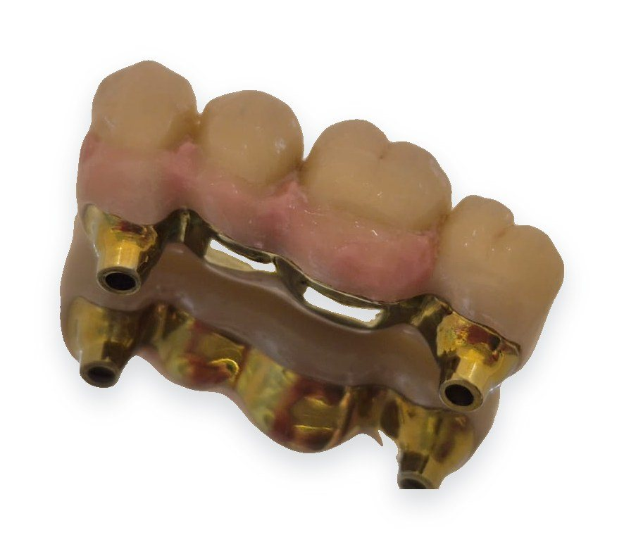
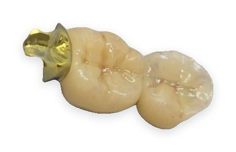

Korunky, můstky a fazety
Zirkon Prettau® s individuálním dobarvením a celokeramika IPS e.max.
Budoucnost je tu
Digitální zubní laboratoř v Praze-Holešovicích. Navrhujeme ve 3D, frézujeme na 5osé fréze Zirkonzahn a ručně dokončujeme. Výsledek? Práce, která sedí napoprvé.
Fixní i snímatelná protetika pod jednou střechou, od zirkonu a e.max po skeletové náhrady.
Zirkon Prettau® s individuálním dobarvením a celokeramika IPS e.max.

Šroubované korunky, individuální abutmenty a hybridní řešení na Ti-bázích.

Celočelistní rekonstrukce na frézované titanové konstrukci.

Frézováno z jednoho bloku titanu, s pasivním dosedáním na implantáty.

Celkové náhrady, skeletové protézy, hybridní konstrukce i opravy.

Okluzní dlahy, chirurgické šablony a diagnostické wax-upy.
Za pár stovek navíc ale dostanete práci, kterou nebudete muset předělávat. Každá další návštěva pacienta stojí ordinaci víc než rozdíl v ceníku.
Prošli jsme cestu od klasické metalokeramiky po plně digitální výrobu. Víme, co v ústech vydrží, a poradíme i u složitějšího případu.
Přesné okraje, správná okluze a pasivní dosed titanových konstrukcí. Každou práci před odesláním kontrolujeme na modelu, aby se u vás v křesle nemuselo nic brousit.
Data z intraorálního skeneru zpracujeme hned a frézujeme u sebe v laboratoři. Domluvený termín platí, pacienta můžete objednat s jistotou.
Voláte přímo technikovi, který na vaší práci dělá. Barvu doladíme podle fotografie a návrh vám před výrobou pošleme ke schválení.
Otisky i hotové práce vyzvedáváme a vozíme sami, v Praze i v Plzni a okolí. Bez kurýrů a bez čekání na přepravu.
Pošlete STL z jakéhokoli intraorálního skeneru. Klasický otisk si u vás vyzvedneme – v Praze i v Plzni a okolí.
Obdržíte 3D náhled. Každé přání zapracujeme dřív, než se začne vyrábět.
Zirkon i titan frézujeme in-house na přístrojích Zirkonzahn – bez čekání, bez prostředníků.
Individuální barvení, glazura a výstupní kontrola na modelu. Hotovou práci doručíme až do ordinace.
Navrhujeme v softwaru Zirkonzahn.Modellier. Tvar, kontakty i skus vidíme na setiny milimetru, ještě než se fréza dotkne materiálu.



Pracujeme na 5osé fréze Zirkonzahn – špičce digitální zubní techniky. Simultánní frézování v pěti osách zvládne podsekřiviny, šikmé šroubové kanálky i nejjemnější anatomii fisur. Výsledkem je dosedání, které sedí napoprvé. A protože fréza stojí přímo v laboratoři, máme kvalitu i termín plně ve svých rukou.









Cena se liší podle typu a objemu práce a vždy ji s vámi předem konzultujeme.
[Krátký příběh laboratoře – od kdy funguje, s jakými ordinacemi spolupracuje.] S každou ordinací jednáme napřímo, bez prostředníků: technik, který práci navrhuje, je ten, komu voláte.
Do [24 h] v pracovní dny se ozveme s termínem a cenou.
Číslo zakázky: —
Ukázkový režim – formulář zatím není napojený, nic nebylo odesláno.
Pošlete odkaz na STL, nebo objednejte svoz otisku. Vyplnění zabere asi 2 minuty – a první práce vás přesvědčí víc než jakákoli slova.